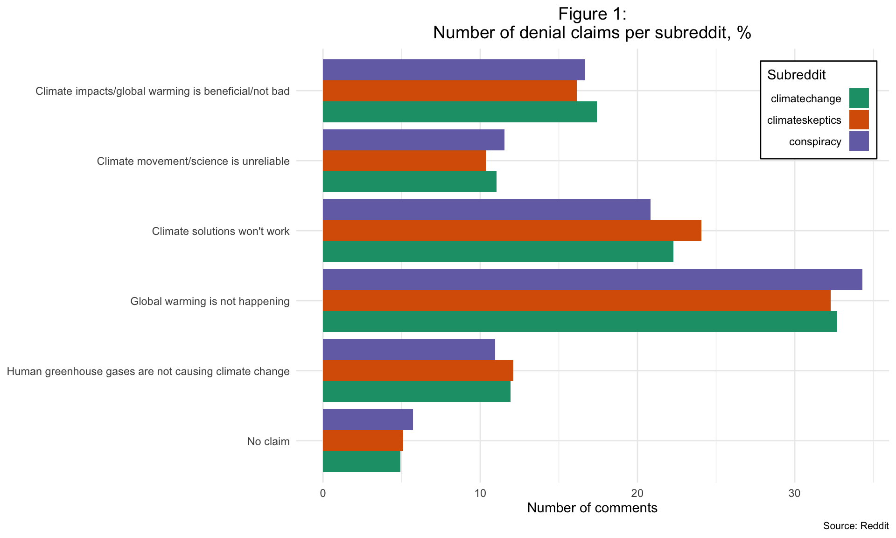
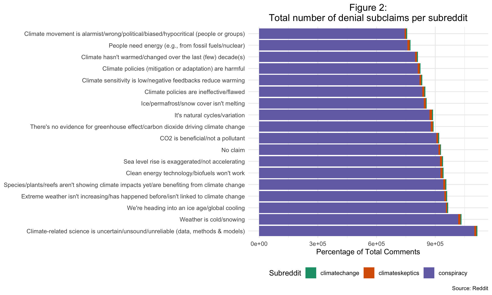

Natural Language Processing: the prevalence of climate denialism
Summary
In this section, we will present analysis leveraging a climate misinformation NLP model, developed by Coen et al. (2021). This model, originally trained on paragraph-length online publications, identifies five distinct climate denial claims and a number of subclaims. Table 1 summarizes these claims.
Overall, we’ve found numerous instances of both claims and sub-claims in all three subreddits of investigation. Most notably, xxx.
To deepen our understanding of these comments, we also ran a sentiment analysis to see if non-denial posts and the different claims have similar or different sentiment. Overall, we’ve found that xxx.
The details of the analysis can be found in the following section.
Goal V.
Identify the presence and prevalence of specific climate denial claims, such as ‘climate change isn’t real’ or ‘climate policies don’t work’.
Beyond the analysis we’ve conducted as part of our EDA exploration, we wanted to develop a deeper understanding of the type and prevlaence of climate denialism in the three investigated subreddits. To do so, we leveraged a climate misinformation NLP model, developed by Coen et al. (2021). The model we used is based on RoBERTa, an optimized version of the BERT LLM model. We leveraged the simpletransformers library to access the model, and used the model weights provided by Coen et al. (2021). As a result of this analysis, each comment was classified as either non-denial, or as containing one of the 17 sub-claims and thus containing climate misinformation. Figure 1 illustrates the overall prevalence of the 5 claims across the three subreddits. It can be seen that xxx.
We also wanted to understand how the presence of these claims relate to a post being controversial. Is there a higher likelihood of a post being tagged as controversial if it contains any of these claims? Figure 2 illustrates this split. We also conducted a chi-square test to understand this relationship, and the result is xxx.
Goal VI.
Understand the differences between the three subreddits when looking at the presence and prevalence of claims and subclaims, such as the ‘climate change isn’t real’ claim and the ‘ice isn’t melting’ subclaim. Investigate trends over time to see if any particular claim is gaining in popularity.
Beyond the presence of the specific claims, we also wanted to understand which sub-claims are the most prevalent. Figure 3 illustrates this across the three subreddits.

To understand trends over time, we looked at the three different subreddits and how the presence of each claim has been evolving in the investigated time period. Figure 4.
Goal VII.
Understand the overall sentiment of posts, and how the tone of posts relate to the identified climate denial claims and subclaims.
To deepen our understanding of these comments, we also ran a sentiment analysis to see if non-denial posts and the different claims have similar or different sentiment. Overall, we’ve found that xxx. Figure 5.
Goal VIII.
Understand the role of external information in climate misinformation: how prevalent it is to include external sources, and how credible these sources are.
Technical Proposal:
Identify the presence of external links or references to materials using regex, and leverage NLP to understand the credibility of the sources indicated. The source of this research is the list of climate misinformation sources leveraged in goal #2. Using counts and aggregations, understand how prevalent it is to use external sources, and what portion of them are a known climate misinformation one.